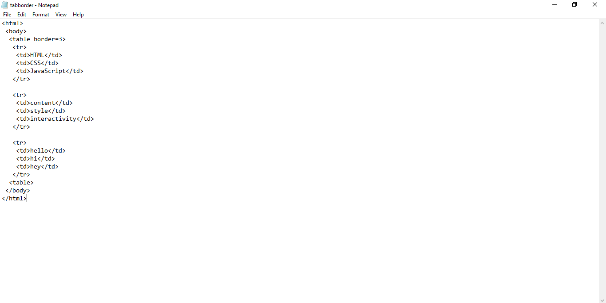

In all the example earlier used, the table tag always contains something like this "border=2". In this case the border was given a value of "2". This creates a border around the table. The borders can be made thicker by increasing its value. Here is an example.
 OUTPUT